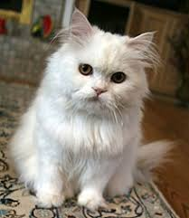

Cat ownership has a calming and soothing effect on the owner, and cats help reduce stress levels for most owners.
According to scientific research, cats are generally quiter and nicer than dogs. Cats are usually very clingy and give people a pleasant feeling. In addition, during difficult times, cat snuggles can help people get over their sadness, and surveys have shown that cats are good liseners.